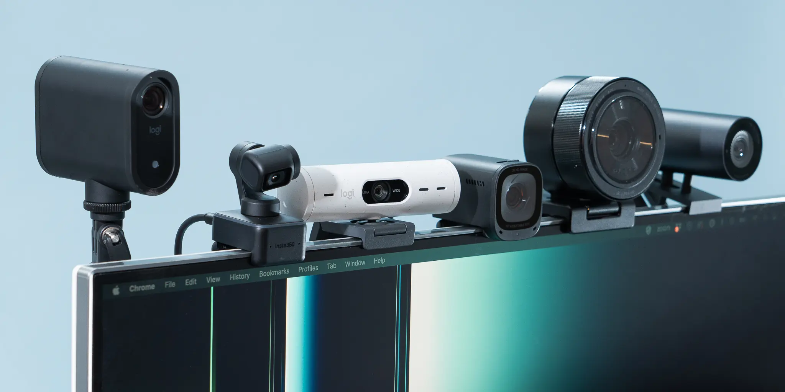

Top 5 Webcams for Crystal Clear Video Calls in 2026

Agar aap professional meetings karte hain, to laptop ka built-in 720p camera kafi nahi hai. Aik alag webcam aapki image quality ko upgrade kar deta hai.
1. The Industry Standard: Logitech C920
Pros: 1080p resolution, autofocus, dual microphones, tripod ready.
Cons: Is mein built-in privacy shutter nahi hai.
2. Best for Low Light: Razer Kiyo
Iski khasiyat iski built-in "Ring Light" hai. Agar aapke kamre mein roshni kam hai, to ye camera behtreen hai.